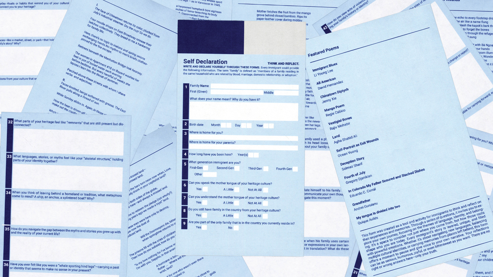
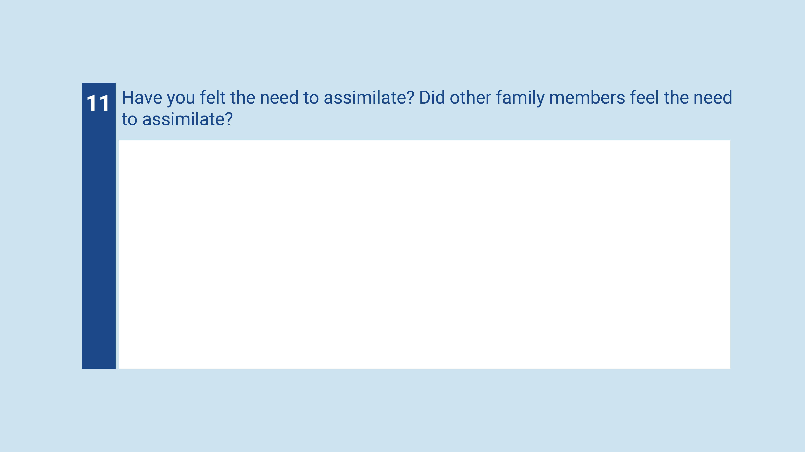
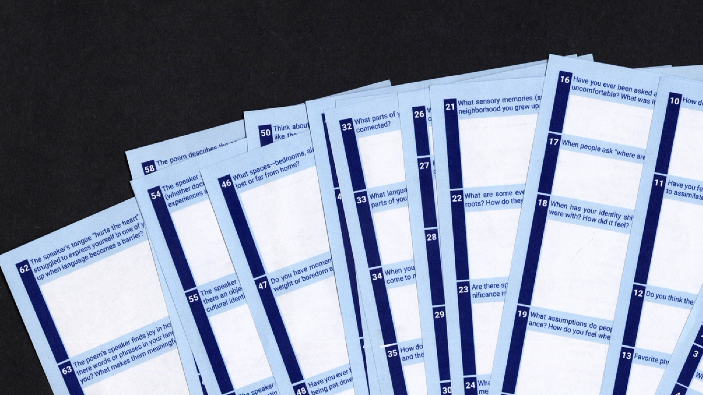

This unbound set of forms using the vernacular of the United States customs declaration aims to allow immigrants to reflect on their identities and experiences through corresponding personal questions and poems written by those of immigrant experiences.
Set in Roboto.


